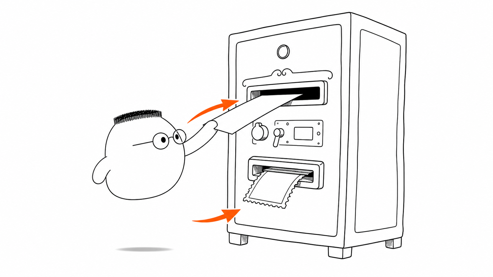
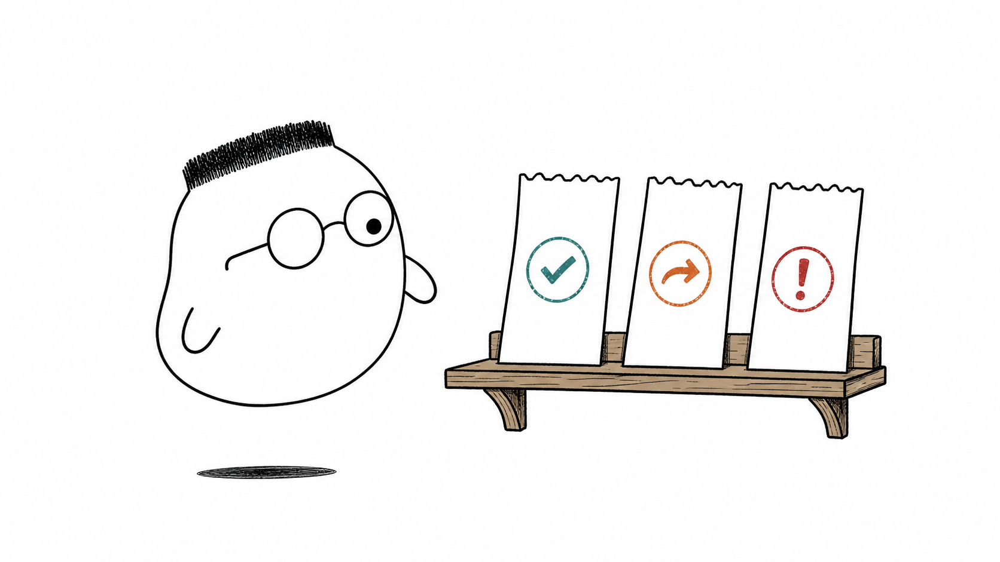
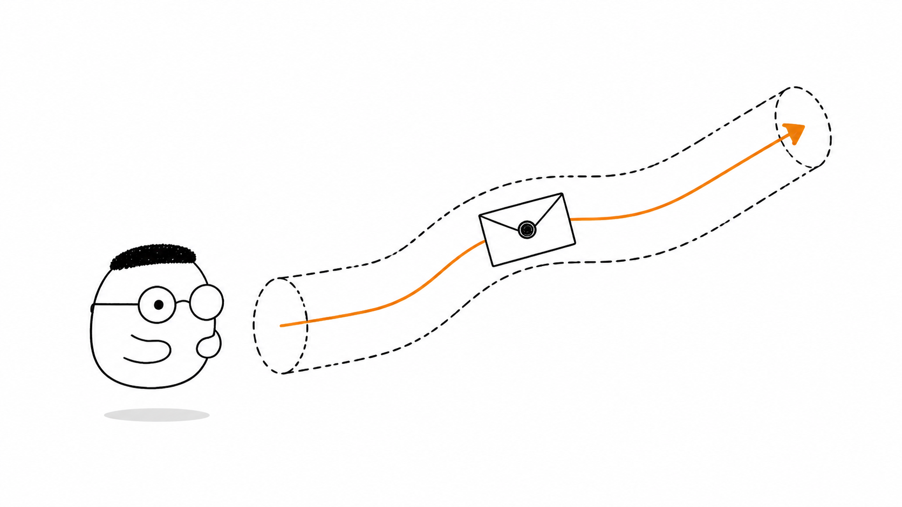
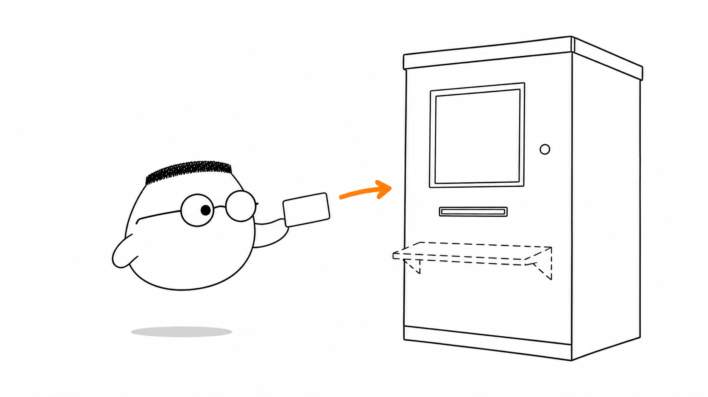

Masalah sehari-hari
Ketika Anda membuka sebuah link, halaman tidak muncul begitu saja: browser mengirim request ke server, lalu server mengirim respons kembali.
Analogi Arga
Arga datang ke loket kantor pos untuk meminta sebuah surat. Ia menyerahkan surat permintaan kepada petugas, lengkap dengan alamat tujuan dan isi yang ingin dikirim.
Petugas loket memeriksa surat itu lalu memberikan tanda terima bercap. Loket tidak mengingat Arga setelah urusan selesai, jadi pada kunjungan berikutnya Arga perlu membawa kartu identitas lagi.
Peta sederhananya
Surat Arga adalah request, jawaban loket adalah respons, dan jalur pos adalah TCP yang membawa pesan dari satu tempat ke tempat lain.
Ilustrasi

Perhatikan hanya dua arah: surat masuk lewat celah atas, tanda terima keluar lewat celah bawah.
Penjelasan konsep
Di loket pos, surat permintaan Arga adalah request dan tanda terima dari petugas adalah respons; dalam HTTP, browser menjadi client dan loket menjadi server.
Surat punya tiga bagian: baris perintah untuk mengatakan apa yang diminta, label di sampul sebagai header, dan isi surat sebagai body.
Method adalah kata kerja pada kertas permintaan: GET untuk mengambil, POST untuk menitipkan, lalu PUT, PATCH, atau DELETE untuk mengganti atau menghapus.
Status code adalah cap pada tanda terima: 200 berarti berhasil, 404 berarti alamat tidak ditemukan, dan 500 berarti mesin server bermasalah.

HTTPS seperti amplop tersegel, sehingga tukang pos di perjalanan tidak bisa membaca atau mengubah isi surat.

Istilah yang cukup dikenali dulu, ketuk untuk membuka:
Idempotensi
Menekan tombol ambil berkali-kali seperti meminta salinan surat yang sama, hasil akhirnya tetap sama.
Stateless
Loket tidak menyimpan ingatan antar kunjungan, jadi setiap request perlu membawa kartu identitas jika server perlu tahu siapa Anda.
Cookie, session, dan JWT
Kartu identitas yang dibawa kembali agar loket dapat mengenali kunjungan berikutnya.
Redireksi
Tanda terima yang mengatakan bahwa alamat tujuan sudah pindah ke alamat lain.
Caching
Menyimpan fotokopi surat supaya Anda tidak perlu meminta ulang ke loket.
Keep-alive
Jalur pos tetap terbuka untuk beberapa surat, jadi loket tidak perlu membuka dan menutup jalur setiap kali.

Diagram alur
Browser mengirim request, server memprosesnya, lalu respons pulang membawa status code agar browser tahu hasilnya.
Contoh mini
Request GET /berita Host: contoh.test Accept: text/html Respons 200 OK Content-Type: text/html Berita hari ini.
Seperti kartu pos, request menyebut tujuan dan yang diminta, lalu respons mengembalikan hasil beserta cap statusnya.
Ringkasan
- HTTP adalah percakapan teratur antara client dan server melalui request dan respons.
- Request memiliki baris perintah, header, dan body, seperti surat dengan instruksi, label, dan isi.
- Method menyatakan tindakan yang diminta, sedangkan status code menyatakan hasilnya.
- Server bersifat stateless, sehingga identitas atau salinan yang dibutuhkan perlu dibawa kembali oleh client.
- HTTPS menyegel perjalanan pesan, sementara TCP membawa pesan di jalur yang menghubungkan client dan server.
Pertanyaan pemahaman
- Apa saja isi utama sebuah request dan respons HTTP?
- Mengapa server tidak mengingat Anda antar request, dan apa akibatnya bagi setiap request berikutnya?
- Apa perbedaan arti status code
200,404, dan500?
Mau lebih dalam
Versi teknis membahas detail yang belum kita bongkar di sini, termasuk header, CORS, dan caching dalam.
Disinggung sekilas
- Evolusi HTTP: 0.9, 1.1, 2, dan 3
- Jenis-jenis header
- CORS dan preflight
- Request kondisional dan penguncian optimistis
- Negosiasi konten dan kompresi
- Range request